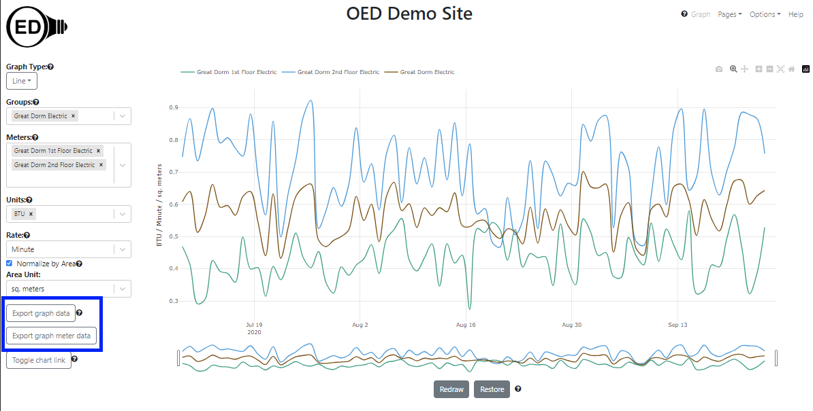
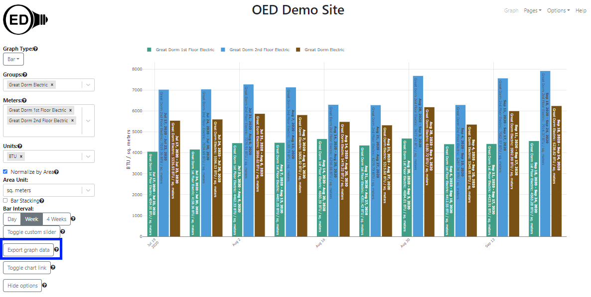

OED Documentation
Exporting Data
Version V1.0.0
Documentation overview
User documentation
Information
Graphing
Meters/Groups
Other Features
Admin documentation
Documentation versions for this page
Overview
OED is an open system that believes your site data belongs to you and should be readily available. The ability to export data is the feature that lets you get the data. You may want to do this to work on it outside OED or to transfer the data to another system. OED uses the vendor neutral CSV (Comma Separated Value) spreadsheet format for exported data.
Usage
Line graphics
The export feature gives the data associated with the graphic you are displaying. This means one can select meters/groups, time ranges to plot, units, etc. and visualize them in OED before one exports the data. Once the graphic contains the data one wants, one can either click the "Export graph data" button or "Export graph meter data" button (both inside blue box in next figure) to initiate the export. Note that in this figure the data has been normalized by area, the rate has been made per minute and the dates zoomed to about two months .to demonstrate that export works with many features. 
The "Export graph data" will give you the points on the OED graphic that is being displayed. The size of the exported files will not be large because you are getting the graphic points as described in the line graphic details. The "Export raw graph data" will give you the original (raw) meter data that was used to create the graphic. Since this is the raw meter data, group data on display in the graph are not included in the export of raw data.
When you click the "Export graph data" button in the figure above, one will get three files named: "oedExport_line_July_16_2020_12_00_00_AM_to_September_24_2020_12_00_00_AM_Great Dorm 1st Floor Electric_BTU.csv", "oedExport_line_July_16_2020_12_00_00_AM_to_September_24_2020_12_00_00_AM_Great Dorm 2nd Floor Electric_BTU.csv" and "oedExport_line_July_16_2020_12_00_00_AM_to_September_24_2020_12_00_00_AM_Great Dorm Electric_BTU.csv". There is one file for each meter or group. The name of the file has the following information separated by underscores:
- The first part indicates it is an OED export of line data. In this example it is "oedExport_line".
- The second part indicates the date range of the graphic and included data. It will be the same for all meters and groups. In this example it is "July_16_2020_12_00_00_AM_to_September_24_2020_12_00_00_AM".
- The third part indicates the meter or group name. In this example it is "BTU". For the first file in this example it has "Great Dorm 1st Floor Electric".
- The fourth part indicates the graphic unit. It will be the same for all meters and groups. In this example it is "BTU".
Note the file name does not include the rate or if it has area normalization. It is unusual to export with these changed but if that is done you will have two files with similar names with different information.The header row described below will tell which is which inside the file.
The files in this example for "Export graph data" are: Great Dorm 1st Floor Electric, Great Dorm 2nd Floor Electric and Great Dorm Electric. The first row in the csv file is a header row with the following columns:
- "Readings" column will contain the value for this reading.
- "Start Timestamp" column will contain the start date and time for this reading.
- "End Timestamp" column will contain the end date and time for this reading.
- "Meter name" or "Group name" column is a label to indicate that the next column in header row contains the meter or group name
- Is the meter name. In The first file it is "Great Dorm 1st Floor Electric".
- "Unit" column is a label to indicate that the next column in header row contains the y-axis graphing unit.
- Is the unit. In The first file it is "BTU / Minute / sq. meters". When appropriate this will tell the rate ("Minute" here) and the area unit for normalization ("sq. meters" here)
When you click the "Export graph meter data" button in the figure above, one will get two files named: "oedRawExport_line_July_15_2020_9_10_00_AM_to_September_24_2020_3_30_00_PM_Great Dorm 1st Floor Electric_BTU.csv" and "oedRawExport_line_July_15_2020_9_10_00_AM_to_September_24_2020_3_30_00_PM_Great Dorm 2nd Floor Electric_BTU.csv". The differences from the "Export graph data" import are:
- The file name begins with "oedRawExport".
- The unit will be the one that each meter reads in and can differ from the "Export graph data" due to this fact. In this case it will be "kWh". This is not put in the file name but is still in the header row.
- The readings within the file is the original data from the meter that is unfiltered by OED except being for the dates graphed. The times spanned by points may vary from the "Export graph data" due to this fact.
- Because the readings are the original ones from the meter, it is possible to get partial days in cases when the "Export graph data" did not include them. As a result, the dates can differ and they do in this case. This is due to the fact that OED did some readings averaging on the line graph as described in the line graphic details.
The files in this example for "Export graph meter data" are: Great Dorm 1st Floor Electric and Great Dorm 2nd Floor Electric
The size of this CSV file scales with the number of meter points and can be large. To avoid accidental or inappropriate downloads of large files, OED does the following:
- If the file size is small (normally set to 5MB) then the file is automatically downloaded when the button is clicked. You do not need to be logged in to perform these exports.
- If the file size is medium (normally 5-25MB) then the user must have CSV download privileges. This means you must be logged in as a user with either CSV or admin rights. If you have CSV privileges then you will be told the expected file size and ask to verify you wish to download the file. If you have admin privileges then the file will automatically download.
- If the file size is large (normally more than 25MB) then the user must have admin privileges. You will be told the expected file size and ask to verify you wish to download the file.
Note that you will be told you cannot download the data if you don't have appropriate privileges. The download of the meter data as a CSV will take longer than the network transfer time because OED must get the data from the database and format into a CSV.
Bar graphics
Exporting bar graphics data is similar to line graphics with these differences:
- The filename will have "bar" instead of "line".
- The unit will now be a quantity instead of a rate per the description of graphic units used. This is reflected in the unit in the header row. In this example it goes from " BTU / Minute / sq. meters" the case of line to "BTU / sq. meters" in the case of bar.
- The start date may vary from line due to the regular placement of bars as described here. This is reflected in the file name and the data it contains.
- The end date will likely be one day beyond what is listed for line and shown on the bar graphic. This is because a bar graphic includes all the time of the last day. The end of a day is at midnight of the following day. In this case it will be September 25 for bar instead of September 24 for line.
- One can only "Export graph data". You cannot export raw data since a bar graphic sums data over a range of time. The line graphic allows you to see the meter data if that is desired.
Using the same example as for line you get the following figure when graphing the bar data: 
The files in this example for "Export graph data" are: Great Dorm 1st Floor Electric, Great Dorm 2nd Floor Electric and Great Dorm Electric.
Details
You can export line and bar graphic data. You cannot export compare and map graphic data. There did not seem to be a need for compare and maps since compare has very limited data and maps are very much tied to the geographical location. Furthermore, the data shown on compare and maps is, in a general way, a subset of the bar graphic.
If different meters/groups have different ranges of dates in the meter data then it is possible for some meters/groups to have different date ranges. This will be reflected in the file name and in the data contained within the CSV file.
The time range is considered the full time shown on the line graphic (not just the zoomed in time) so you will see that unless you redraw to reduce the time range. (see redraw information)
You can import an exported line file into OED using the readings CSV import if you have administrative privileges.